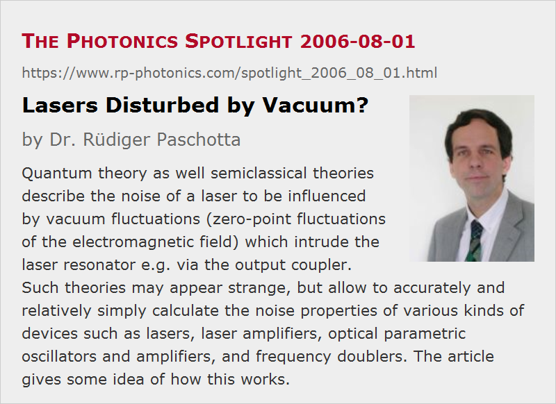

Lasers Disturbed by Vacuum?
Posted on 2006-08-01 as a part of the Photonics Spotlight (available as e-mail newsletter!)
Permanent link: https://www.rp-photonics.com/spotlight_2006_08_01.html
Author: Dr. Rüdiger Paschotta, RP Photonics Consulting GmbH
Abstract: Quantum theory as well semiclassical theories describe the noise of a laser to be influenced by vacuum fluctuations (zero-point fluctuations of the electromagnetic field) which intrude the laser resonator e.g. via the output coupler. Such theories may appear strange, but allow to accurately and relatively simply calculate the noise properties of various kinds of devices such as lasers, laser amplifiers, optical parametric oscillators and amplifiers, and frequency doublers. The article gives some idea of how this works.
Ref.: S. Reynaud and A. Heidmann, Opt. Commun. 71 (3-4), 209 (1989); encyclopedia articles on vacuum noise, laser noise, quantum noise, shot noise, and others

Lasers are known to be rather sensitive devices. However, most people will be surprised to learn that even nothing – the vacuum! – introduces noise into lasers.
This is no joke, but rather a crucial element of a quantum-optical description of laser noise, and also in semiclassical theories as developed e.g. by researchers at the Ecole Normale Supérieure in Paris in the 1980s (see the reference above). In this picture, noise is introduced into the optical field circulating in a laser resonator not only by pump fluctuations and alike, but also results from the zero-point fluctuations of the electromagnetic field, which leak into the laser resonator. This happens particularly at the output coupler mirror, but also at any other location where optical losses occur. (There is no way to let radiation disappear without opening a path for quantum fluctuations coming in.) These “vacuum fluctuations” thus affect the intracavity field, and interestingly they again mix with it in the laser output: the output field is described as a superposition of the intracavity field partly leaking out of the resonator and the vacuum fluctuations coming from outside the resonator and being partly reflected at the output coupler. How these two fields are correlated with each other depends on the optical frequency. Somewhat aside from a cavity resonance there are phase shifts associated with off-resonant excitation. For frequency further away from the resonance (i.e., for large noise frequencies), one obtains little intensity coming from inside the resonator, and the output is dominated by the reflected vacuum fluctuations, which turn out to be responsible for the shot noise observed at these frequencies.
Skeptical readers may find it disturbing that one cannot test such claims by blocking the “vacuum input” and checking the difference in outcome: even a totally absorbing medium will remove any incident photons, but can not kill the vacuum fluctuations. However, the mentioned theories are experimentally well tested, surely accurate, and particularly their semiclassical forms are very convenient tools to calculate the noise properties of all sorts of devices – not only lasers, but also laser amplifiers as well as parametric devices such as optical parametric oscillators and parametric amplifiers, and frequency doublers.
This article is a posting of the Photonics Spotlight, authored by Dr. Rüdiger Paschotta. You may link to this page and cite it, because its location is permanent. See also the RP Photonics Encyclopedia.
Note that you can also receive the articles in the form of a newsletter or with an RSS feed.
Questions and Comments from Users
Here you can submit questions and comments. As far as they get accepted by the author, they will appear above this paragraph together with the author’s answer. The author will decide on acceptance based on certain criteria. Essentially, the issue must be of sufficiently broad interest.
Please do not enter personal data here; we would otherwise delete it soon. (See also our privacy declaration.) If you wish to receive personal feedback or consultancy from the author, please contact him e.g. via e-mail.
By submitting the information, you give your consent to the potential publication of your inputs on our website according to our rules. (If you later retract your consent, we will delete those inputs.) As your inputs are first reviewed by the author, they may be published with some delay.
|  |
If you like this page, please share the link with your friends and colleagues, e.g. via social media:
These sharing buttons are implemented in a privacy-friendly way!